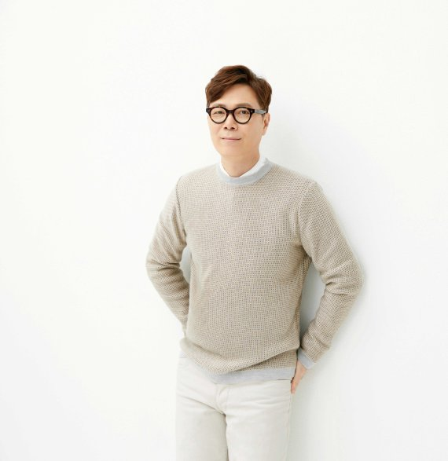

예술가가 될 수 없는 수백 가지의 이유가 아니라, 되어야만 하는 자기만의 단 한 가지 이유가 한 사람을 예술가로 만드는 거예요. 될 수 없는 이유는 중요하지 않아요. 대부분의 예술가가 그렇게 해서 예술가가 된 겁니다.
"저는 30대 초반에 이미 결정을 내렸어요. 아이를 낳지 않겠다고요. 그러면 내 삶이라는 것은 어떻게 되는 것이냐? 그냥 살아지는 거라고 생각해요. 그냥 살아지는 것이라면, 그럼 세계는 뭐냐? 세계는 우리와는 전혀 관계없이 존재하는 것이죠. 저는 우주에 관한 책을 굉장히 좋아해요. 빅뱅 같은 천체물리학에 관한 책들을 좋아하고, 스티븐 호킹의 책도 좋아해요. 그 책들을 보면서 우주에서 신성을 보는 사람도 있지만, 저는 그냥 인간이라는 것은 우주의 한 점 먼지에 불과하다고 생각해요. 휴머니즘의 반대편에 서 있는 것이죠. 인간이 무언가를 할 수 있고, 세계도 바꿀 수 있고, 그밖에 어떤 의미 있는 것을 할 수 있다고 생각하는 분들이 계시는 반면, 저는 그 반대편에 있어요. 저는 인간들은 아까도 말씀드렸다시피 어리둥절한 채 서로에게 상처를 입히고, 죽지 않으려고 발버둥치다가 결국은 죽어 사라지는 존재라고 봐요. 물론 영생에 대한 관념들도 있지만, 저는 그런 관념에는 동의하지 않아요. 그것에 관해서는 뭐랄까, 아주 오래 전부터 도저한 허무주의를 갖고 있었어요. 제가 20대 후반에 쓴 소설에 나타난 허무주의에 대해서 많은 분들이 "젊어서 그럴 거야"라고 생각했지만, 지금까지 계속 보신 분들은 아니라는 것을 알게 됐을 거예요. 앞으로도 저는 별로 변하지 않을 것 같아요. 지금까지 그렇게 살아왔으니까요."
